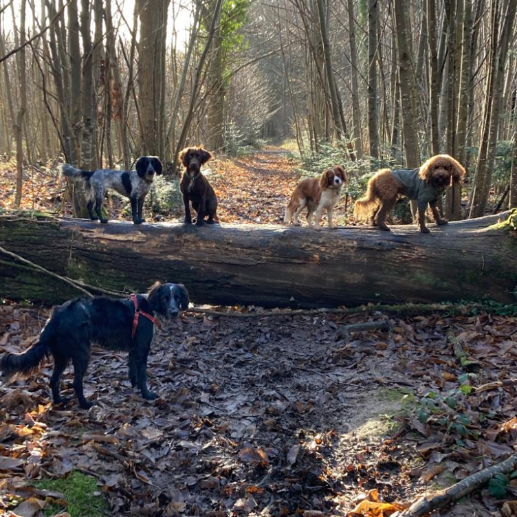
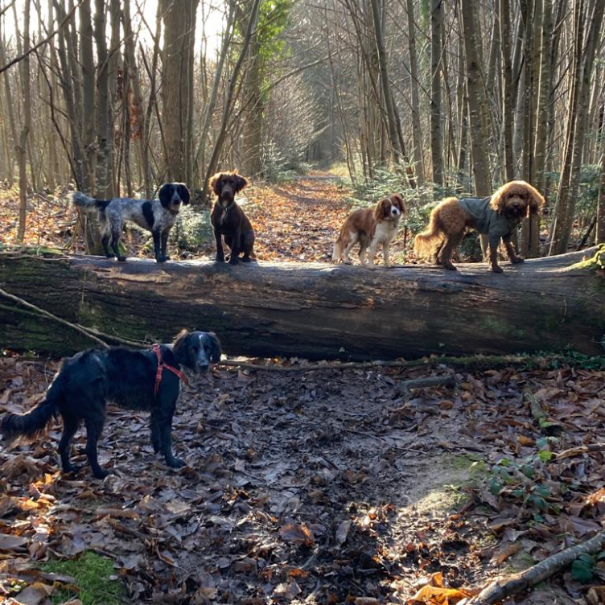

Grooming Facilities
Hydro Bath
A Dog Hydro bath works by spraying a high volume of warm water through a conventional shower head. This will penetrate and massage the thickest of dog coats for fast, efficient cleaning and grooming. The shampoo mixes with the water and is sprayed at a high volume using the powerful water pump, allowing the solution to soak right through to the dog’s skin where most problems occur. Hydro baths reduce bathing times dramatically making your dog’s grooming experience more pleasurable.
Walk in Shower
I have designed a walk in Shower for Elderly and Large Breed dogs, giving them a more relaxing experience. As it is situated next to the Hydro Bath it is still possible for them to have the Hydro experience.
Grooming Table
A hydraulic grooming table is used to allow the dog to step on and off the table if necessary. Supporting straps are used to ensure the dog does not jump from the table and injure themselves.
Equipment
High quality grooming equipment is used, disinfected, sterilised and maintained after use.
 

Doggy Darecare
In our front of house we have a lovely daycare facility with several beds and a couch with a TV above playing the best dog films out there.
Walking Locations
I walk in lots of different areas in and out of Portsmouth, just to name a few Rowlands Castle, Milton Common, Queen Elizabeth Country Park and Eastney Beach.
Contact Me
37 Tamworth Road, Portsmouth
England, United Kingdom
dogdevotion@hotmail.com
Bookings can be made by
calling me at 07530597209
or by contacting me via Facebook